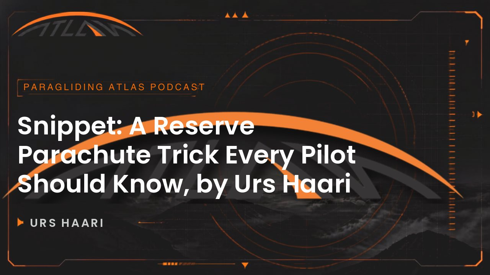

Snippet · with Urs Haari A Reserve Parachute Trick Every Pilot Should Know by Urs Haari

Urs HaariNo matter where you are, it's your last chance and you have to go for it. If nothing happens, you have to get active.
Urs Haari
Also with Urs
The Real Truth About Reserve ParachutesCan we Steer a Round Reserve Parachute? Urs Haari Answers!There is much more to reserve parachutes than just getting them repacked periodically and in a correct way! This talk is a snippet from one of our most replayed moments from an episode where we ended up revealing The Real Truth about Reserve Parachutes. for more cool stuff about Paragliding, It's free
Full Transcript
Automatic captions from Spotify, which provides no speaker labels, so this transcript is not attributed to a speaker. May contain recognition errors.
Introduction
00:00
You can even steer a non steerable square or round parachute if there is wind by that goal. Or pull in the B lines one side asymmetrical. You can even influence the direction a little bit. I mean that helps if you're drifting towards an obstacle in the valley range for instance. And the behaviour for Beamer and steerable, a reserve part of short is exactly the same like for unsteerable. So you throw it, you wait to opening. If it's not opening, you, you need to do something that it opens. And this is something that all the pilots don't know. They throw the reserve and they're waiting and they're
waiting and nothing happens. So if nothing happens, you, you have to get active. And there are ways to open the reserve parachute, which has a, a problem of a malfunction. There are chances. And then when the opening is is in process, start working on your on your para glider. Try to neutralize it as quick as possible. And then until now we are at the same stage steerable and and this is perfect because most of the time a lot of openings they take and place pretty low. And if there is time, if you have a steerable reserve, then you keep your paddle glider, your neutralized paddle glider that is in AB4 or C4, you keep
both risers in one hand and you just grab with your opposite hand. You just grab one brake line and you pull it. And because we have on the beam and we have pre brake opening set up, if you pull one line, 1 brake line with this one, you can turn to both sides because the other side is still pre brake. And this way makes sense makes. Sense. And this way, if you're lucky, you can avoid an obstacle. We're not talking about the sport landing. It's not necessary. You just need to avoid flying into a power line or into a house or, you know, into a river. But that's what people should
learn. And you have to train this if if it's the first time and you've never tried it before, it won't work. And you know, I remember when I did my first reserve opening above water, it was it really saved my life. Later on, one year later when I was above water, I was meters. We did some tests. I was really young when I was above water and I saw these little tiny boats underneath the lake. I was so scared. And just imagine I was thinking when I would be above the pumps in scroll Valley winds and you know, beside of rocks, I would even be more scared.
But that's the point. If time has come, if the ship hits the van, the decent decision must come like boom, now it's time for the reserve. No matter where you are, it's your last chance and you have to go for it. So train this, train this even more than once. It really it's a game changer. For me it was. Quickly, why did you use the word? If you're lucky you might skip the obstacle? Like is there a sure short way ish to skip the obstacle with a regalo? Because in that regalo what regalo is supposed to be? Or are you talking about blowbacks and those kind of scenarios?
Why lucky, and whether there is a sure way
03:53
Another thing is that, you know, when people decide for a stealable reserve, they think they can steer like steering like their paraglider. And that's not the case. It is the case if you do hundreds of openings like Addito, I, I do sport landing with my Robolo. I can, but you, you have to, to train yourself. But if the, if you never trained before, if it's the first time, then you know, that's what I explained before, that's what we train to our customers. You know, neutralize your padded lighter, go for your brake line look, check the landscape, look where you are drifting to. And if you have time, if you
have enough height, then just, you know, try to land somewhere where there are no obstacles.